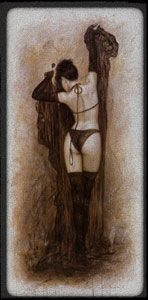

Joué par :
Larmelune Joué par :
[ Information masquée ] Age : 23
Lieu de naisance : Lordaeron
Signe de naissance : Tigre
Sexe : Femme
Race : Humain
Faction : Alliance
Formation : Voleur
Niveau : 60
Guilde : Tendre Aurore Artisanat 1 : Herboriste
Artisanat 2 : Alchimiste
Description : Un regard sombre et intense, un sourire en coin. C'est une belle brune à la peau ambrée, nonchalante et sensuelle à sa facon, brutale ou féline, piquante voir acide. Elle arbore une fausse allure de garcon manqué, restant entre dureté et taquinerie en toutes occasions, montrant rarement un peu de douceur et préferant les pantalons aux robes...pourtant elle ne manque pas de coquetteries, par touche discrète et toujours de mise impécable et vêtue de facon à mettre ses jolies formes en valeur.
Elle a son franc parlé, ce qui plait ou pas, ca passe ou ca casse... elle s'exprime souvent sans tact.. avec ses mots a elle, sans crainte du vulgaire, se conférant une allure de gamine des rues, en se moquant éperduement ce que l on pense d'elle.
Elle se déplace en silence, d une démarche sure et féminine, souvent en solitaire, sans prêter attention a ce qui l'entoure...du moins apparament.
Ère du Renouveau [1]
Lune de la Force [1]
Décade du Panda
Décade du Gorille
Décade de l'Ours [1]
Une nuit Inoubliable
Elle était assise comme souvent dans la vieille auberge, les jambes allongés sur un coin de table, sirotant une bière à sa facon si singulière avec un ustensille bizare qu'elle aimait a nommer "paille". Ca faisait peut etre une semaine qu'elle avait "fugué", se retrouvant seule sans un sous, adoptant un style de vie neuf, d errance de taverne en taverne. Mais on s'y faisait vite aprés tout.
La soirée ne promettais rien d'extraordinaire...
Elle avait remarqué ce type bizare dans un coin a une table, arborant sa flamboyante armure et son lourd Marteau à deux mains posé a son coté, il aurait été difficile de ne pas le voir, d'autant plus que le regard insistant qu'il s'echinait à poser sur la voleuse laissait supposer qu'il ne demandait qu'à être remarqué. Elle se contente d un sourire en restant focalisé sur ses pensées, il a du prendre cela pour une invitation et se lève pour la rejoindre. Un échange sans grande saveur s'en suis, tandis qu'elle examine l homme de plus pret...Belle prestance, dans la force de l'age, son marteau et les blasons de son armure laissaient supposer qu il etait paladin, et la nature du regard qu il posait sur elle suffisait déduire que ses pensées etait bien loin de celle d un saint.
En tout cas d un regard on voyait qu il n'etait pas dans le besoin.
Le type s'enhardie, il glisse une main sur sa cuisse, ce geste la hérisse mais sur l instant elle ne reagit pas et quand il l'invite a une balade sur les berge du lac voisin, une autre idée viend à germer dans son esprit et c'est presque docilement en reprenant un sourire qui eu pu lui paraitre sincère, qu'elle le suis.
C'etais a priorie un habitué des lieux, ca ne devait pas être la première balade du genre qu'il s'offrait dans le coin. Une fois sur les berges, ses mains ne tardaire à pas à se faire plus baladeuse, pressante voir opressante, c etait le bon moment...
elle se recule un peu en saisisant les mains de l homme..
" Non Non, pas comme ca, Laissez moi faire et je vous promet une nuit inoubliable.."
L homme sembla apprecier l offre et ne protesta nullement quand La voleuse s'employa a le delivrer de son armure, il ne protesta pas non plus quand elle attacha ses mains dans son dos, liant le tout a une épaisse racine. Il sembla plus qu impatient quand ses braies glissèrent au sol, mais il sembla bien plus surpris quand il vie la voleuse saisir sa lourde bourse d'or et la faire sautter dans sa main en se relevant, un sourire aux lèvres.
Une profonde révérence , elle lui envoie un baisé. Vu l endroit le pauvre Paladin risquait de ne voir personne avant le matin..
Et c 'est simplement en s'en allant qu'elle lui repeta
" je vous l'avais dit, une Nuit Inoubliable!"
*Elle n'etait pas particulièrement fière de son tour avec le recul, mais un tour pendable a un paladin aprés tout...il le vallait bien. En un eclair il avait su lui rappeler son père, cet homme intransigeant et si fou, trop proche des croisés ecarlates pour être fiable. Cet homme froid et pragmatique qui aurait aimé la vendre à un de ses collègues avant de partir se poster au plus prêt de la défunte Lordaeron avec ses fanatiques amis...
Lordaeron..la ou sa defunte mère devait hanter les rues d un corps meurtrie et ravagé par le fléau...
Oui vraiment..au milieu de cette famille, la fuite était que le seul choix acceptable...et au fond, c'est maintenant que les choses allaient vraiment commencer..*
Lune d'Agilité
Décade du Tigre
Décade du Singe
Décade du Faucon
Lune de l'Esprit
Décade de la Chouette
Décade de la Baleine
Décade du Lapin
Ère du Conflit
Lune de la Force
Décade du Panda
Décade du Gorille
Décade de l'Ours
Lune d'Agilité
Décade du Tigre
Décade du Singe
Décade du Faucon
Lune de l'Esprit
Décade de la Chouette
Décade de la Baleine
Décade du Lapin
Troisième Ère [1]
Lune de la Force [1]
Décade du Panda
Décade du Gorille [1]
Au clair de lune
Une tache claire sur une toile obscure, les etoiles ce soir s'eclipsent de la scène pour laisser une nuit profonde servir de coccon aux ames perdues de theramore. le port est silencieux, les quelques passants se hatent, glissant en ombres froides sur les quaies pour rejoindre leurs couches ou le relais de griffons. Un navire aux voiles sombres baigne encore dans ce port qu il n'a pu quitter depuis des mois. Il eut pu paraitre désert a priorie, et rares étais les "matelots" qui venaient à passer à son bord à présent, a quelques exeptions pret.
Mais le soir une lueur emmanait de la cabine, une fine chandelle laissait filtrer une lumière douceatre dans les ténébres, éclairant la chambre confortable du pirate.
Elle etait serré contre lui, ses cheveux d ebene perdue sur les draps blancs en le couvant de ses prunelles sombres, a présent il dormait paisiblement, son torse se soulevant au rythme lent et et hypnotique de sa respiration. C'etais sans doute le moment qu'elle affectionait le plus, quand elle l'avait pour elle seule, dans un refuge discret ou les regards ne venaient pas s'agarer. Elle le regardait pendant de longues minutes, parfois se coulant en heure, en se serrant contre sa peau tiede, ne fermant les yeux que pour laisser des images plus enivrantes encore envahir son esprit, en respirant l'odeur de sa peau.
Elle exquisse un sourire, il sentait déja la sueur et le rhum quand il étaient entrés dans la cabine, elle le trainait gentillement, marchant a reculons en le tirant par la ceinture, un sourire malicieux aux lèvres. Elle s'etait vite approché de lui, ses levres venant froler les siennes un instants, avant de s'offrir chaleureusement à l'etreinte douce d'un baisé.
Leurs doigts aussi se denouent, se degourtissant respectivement en hotant grade à grade les vetements encombrants qui genent les retrouvaillent de leur corps. Elle retrouve ses mains, frissonant quand elle glisse le long de son dos pour parcourir la chutte de ses reins, alors qu'elle prolonge leur baisé à l'infinie en l'entrainant vers le lit. Leurs paumes s'harnardissent et elle exhale un soupir quand ses levres glissent dans son cou en douceur , puis plus bas encore pour parcourir la peau délicate de ses seins. Elle se pellotone et l'attire avant de chutteravec lui sur le lit, leurs peaux glissant et s'épousant, se frolant et s'echauffant en douceur sour l'ardeur mutuelle de leurs mains qui s'evadent de glissades en gestes plus osées, plus possessifs, plus doux et plus ardents, plus tendres et plus passionnés. De chaques gestes, chaques mouvements, elle redessine les moindres meandres de son corps qu'elle explore, decouvre et redecouvre chaleureusement des ses paumes et de ses levres. Elle lui murmure quelques mots à peines audible au fur et à mesure que sa respiration se trouble alors que leurs bassin s'echauffent et s'épousent dans une etreinte douce et passionée.
De va et viend en caresses brulantes, leurs respiration s'embalent sur des timbres plus vifs alternant entre rauques et aigues, plaintes feutrés ou felines, en accord avec leurs reins qui s'enflamment, en quête d'un plaisir fulgurant dont l'explosion les pétrifient un instant, avant de les laisser chancellant, au bord de l'abime quand en douceur la brulure s estompe pour ne laisser place qu'a une douce chaleur.
Et ils restaient la encore un moment, leurs doigts degourdies se mouvant encore lacivement en quelques caresses jusqu'a ce que le sommeil ne le surprenne, alors qu'elle murmure tendrement au creux de son oreille "je t'aime".
Décade de l'Ours
Lune d'Agilité
Décade du Tigre
Décade du Singe
Décade du Faucon
Lune de l'Esprit
Décade de la Chouette
Décade de la Baleine
Décade du Lapin
Quatrième Ère [3]
Lune de la Force [1]
Décade du Panda [1]
Rêve ou...?
Un soupir quand ses paupières se ferment. Tapis au creux des bras protecteurs de Zalkan elle sapaise. La journée fut comme toute autre, à courir dun point à lautre du monde pour cueillir quelques trésors, senivrer dair et de rencontre, finir par saventurer encore un peu plus dans Zul Gurub avant de rentrer, épuisée et de retrouver le corps chéri de son mari. A ses heures la le sommeil ne tarde plus, il viens dans une brume légère enlever les âmes pour les guider aux curs de ténèbres calmes, les envelopper dans un nuage cotonneux et doux ou seul le repos est maître mot. Pourtant il arrive quelles se troublent, qu une pensée, un mot séchappe et ne corrompe le voile protecteur pour en entacher la douceur, alors la brume se lève, latmosphère se charge dune ombre inquiétante qui glisse, insignifiante dabord puis, qui saccapare de vos peurs les plus secrètes pour en user des plus insanes façons.
Elle est seule, au milieu des ténèbres, seule à percevoir ce souffle étrange, pesant, ce regard quelle sent sur elle et qui semble venir de partout et nulle part. Lair est lourd, chargé d une moiteur inquiétante, étouffante. Un frôlement, comme une caresse glacé sur sa peau, puis un autre, et encore, il lui semble percevoir des ombres autour delle, tournant, tourbillonnant, ne cessant leurs danses étranges que pour glisser plus prêt d elle encore. Et tout saccélère, elle se débat, lutte contre les impalpables mains qui la harcèle, elle tourne, elle cherche, elle remue bras et jambes pour sarracher à leur étreintes mais ils se rapprochent encore, ce nest plus que leur mains, mais la masse de leurs corps qui viennent peser, se presser contre elle, létouffer, la saisir, la comprimer, la bousculer dune à l autre dans un espace qui ne cesse de se réduire, elle crie , elle hurle, du moins lui semble t il pourtant aucun son ne semble jaillir de sa bouche, étranglé, étouffé dans une marré de gémissements et plaintes fébriles que les spectres avides laissent échapper.
Une rougeoiement trouble les ténèbres éclairant fébrilement une silhouette monstrueuse, une bête cornue aux ailes membraneuses sétendant sur un espace phénoménal. Il relâche un rire, froid, sec, profond et menaçant, suivit en échos par les plaintes des spectres qui semblent prendre corps, ou peut être plus simplement émerger des ténèbres. Elle étrangle un hoquet, son regard se perdant sur une armé de non-morts , avançant, vacillant, cahotant prêt delle et contre elle. A présent elle sent leurs haleines fétides, lodeur putride de leurs corps décomposés, le tout mêlés sur une odeur de chair calciné. Sa tête tourne, elle titube et vacille prise de nausée et elle repousse encore les mains décharnées qui arpente son corps, le désespoir succédant a la panique tandis que la voix profonde de la bête sélève pour lui ordonner de ne pas résister. Cest à ce moment quelle sent une main se refermer sur sa gorge, une poigne de fer, enveloppants son cou dans un étaux ferme qui se resserre et se resserre encore, comprimant son souffle, étranglant sa voix, étouffant son être, son corps est saisie de soubresauts, de hoquets et son regard se fixe sur la goule qui la tiens
Et cest a ce moment la quelle émerge de sa torpeur dans un bon, le corps couvert dune bruine de sueur, les mains pressés sur sa gorge comme pour en retirer un bras invisible en criant « Père! ».
Décade du Gorille
Décade de l'Ours
Lune d'Agilité [1]
Décade du Tigre [1]
Une minute de silence pour Elle
Immobile dans la neige, son regard se perd dans le ciel délavé du Berceau de l hiver. Pas un bruit, tout est calme, à peine troublé par le murmure du vent. Ses paupières frémissent sensiblement tandis que son corps reste inerte au milieu du tapis de coton blanc. On ne la distingue presque plus à présent, si ce nest le métal de son armure argenté qui luie légèrement lustrés par les flocons récemment tombé, sous l éclairage dun soleil voilé. Elle semble paisible, si calme, pas encore endormie mais bientôt sans doute... Ses lèvres sentrouvrent, libérant un filet de sang opaque, troublant le tableau d une intense blancheur d un sillon carmin. Elle étrangle un hoquet et sa poitrine expire un douloureux sifflement, sa main se contracte dun spasme incertain sur les mailles distordues de son armure en dévoilant la brèche improbable sur sa peau mutilé, la aussi taché de rouge. Le flot sépaissie un peu plus, et une larme esseulée glisse sur sa joue, juste une marque , un soupir. Qui d autres quelle pleurera sur tout cela?
Le froid la pénètre petit à petit, la vie senvole au rythme de son sang qui s écoule dans la neige, la chaleur la fuit, déjà ses lèvres ont pâlie, le temps na plus de prises et bientôt elle ne sera plus. Ses yeux ce sont éclaircis et ils contemplent le balais des nuages dans le ciel, le dernier spectacle d un ciel gris sur gris dou semble sévader une légère brume glacée. Dans ses voiles denses le brouillard se trouble, et des images lointaine saniment devant elle, des souvenirs, réminiscences incertaines qui se manifestent maintenant que tout sachève. Cest sans doute cela qui lui arrache cette larme perdue, ses visages et ses sourires quelle croyait disparut et qui reviennent à présent.
Sa vue devient floue et il lui semble capter d improbables odeurs, fragrances délicieuses de son enfance, des senteurs dherbes coupés quand les grands feux des équinoxes étaient dressées dans la plaine. La clairière flotte devant ses yeux, si proche, il lui semble même percevoir les rires des elfes qui dansent autour des grand brasiers. Elle en sourit à présent en reconnaissant plus clairement la scène. C était si loin, les festivités étaient attendues depuis des semaines, les fêtes de lété étaient entre toutes ses préférée. Les journée les plus chaudes laissaient place aux nuit les plus fraîches, éclairées d une lune généreuse et de myriades détoiles ou nul nuages ne venaient se perdre. La musique commençait alors à sélever, dabord le son lascinant des tambours sur lesquels venait glisser celui plus léger d une flûte puis la résonance plus profonde dune mandoline, et le tout prenait vie. La foule bigarrée des elfes se pressait la arborant les tenues les plus variées et les plus légères. Certaines marchaient et dansaient tout juste vêtues dune ceinture de soie pourpre ou violette, rehaussant la finesse de leurs tailles et rondeurs de leurs hanches laissé nue. De rires en sourires elles se pavanaient avec insouciance gouttant chaque plaisir de la fête sous le regard plus sévère des Banduies, ses druidesses de haut rang, suivante de lesprit du corbeaux, enveloppées dans leurs éternels voiles sombres et pourpres, le visage à demi masqué sous des peintures épaisses les rendants identiques au point qu il fut difficile de ne pas les confondre. La fête occultait tout les soucis, quels qu ils soient, ce soir était dévolue au futur, à lespoir, à la vie, bien des couples se formaient ses soirs la, souvent sous la magie de l instant, et ils allaient sauter par dessus les feux, symbolisant leurs unions pour une année. coutume sans aucun doute des plus étranges mais après tout.
Il y avait aussi les guerriers du village, le temps dune grève ils avaient abandonné les lourdes armures pour une tuniques de parade plus légère. Au milieu deux se dressait une elfe, distinguable entre tous par la douceur de ses traits et son port altier. A nen pas douter elle était dune beauté à troubler tout homme, sa chevelure neigeuse retenue par un serre tête dargent, le corps soigneusement enveloppé une robe diaphane on ne peut plus simple laissant ses épaules d une blancheur extrême nue. Cétait un ange, ou presque. Cétait sa mère. Une guerrière magnifique dont le sourire apaisait chacun de ses maux comme elle aurait aimé lui ressembler en grandissant Elle se revoit prêt delle, encore si petite et si frêle, ses petits bras retenant un pan de sa robe pour ne pas se perdre dans la foule ou elle se sentait si minuscule.
Un frôlement, il lui semble percevoir la caresse de la paume de sa mère sur sa joue, sa main tendre et affectueuse, lodeur de sa peau parfumé, et elle se presse contre elle retrouvant toute la chaleur de ses bras elle lui manque tant
Sa voix chaude raisonne à son oreille, lincitant à regarder le spectacle des lutteurs; 2 jeunes éphèbes nues qui se battaient rudement dans une arène tout juste délimité par des cordes tendues au sol. Le vainqueurs gagnerait une couronne de fleur, remise des mains et de sa mère et le droit dêtre le roi de la soirée, disposant de tout un chacun et de chaque bien comme il le désirerait pour la nuit.
Ils étaient si calme, si insouciants ils ne voyaient pas, nentendaient pas ses Ombres épaisses qui se mouvaient à lorée du bois, les grondements des loups, les frémissement anormaux des arbres.
Un éclair fulgurant, une traînée de poudre et un bruit assourdissant quand la masse de pierre en fusion sabat sur le sol avant de se dresser dans un mugissement sinistre.
« Un Inferno!!! Aux armes! »
Le crie était lancé et les elfes se précipitaient en urgence sur les armes, tandis que la masse crépitante battait au hasard de la foule abattant ses bras gigantesque sans répits. Des cries, des hurlements , les bruits des chocs quand le roc heurtait les corps frêles des danseuses les envoyant voler comme de vulgaires fetues de pailles, brisant leurs os, éclatant leurs cranes, brûlant leurs chairs... Et la pluie de feu commença à sabattre, des pierre venues du néant tombant à une cadence infernales pousser par les incantations insanes des orcs dont les voix et les chants glacés étaient devenus audibles, puis vint le chant des guerriers, un bourdonnement de cries et de battage du fer de leurs armes sur leurs boucliers tandis qu ils chargeaient sur la plaine, tranchant, taillant tout sur leur passage animé par une folie meurtrière. Des bras soulèvent Elenwen quand elle assiste pétrifié et impuissante au déferlement, on la porte, on court maman
Elle la pose sur la selle de Lameglace, son fier tigre, dressé pour les charge les plus périlleuse au combat.
« Serre la bride et fuit, et ne te retourne pas! Jamais!
Je te rejoindrais bientôt, je taime . »
Partir sans elle? Elenwen navait pas eu le temps de réagir que déjà sa mère flanquait un coup dans les flancs de l animal en émettant une espèce de feulement flutté, qui ébranla la masse de fourrure. En un instant il avait bondit si fort, si loin, quelle avait crue ne jamais réussir à se maintenir, elle voyait à peine le paysage en saccrochant à son pelage en appelant sa mère, mais déjà le tigre avant pris ses distances et lemmenait au loin. Elle enfouit son visage dans la fourrure, terrorisé au delas de toutes les images qui défilaient devant ses yeux , par la perspective de ne plus revoir sa mère.
Le fauve poursuit sa course effréné de bons de coté en charges furieuses, il esquive les lanciers, chargeant sur quelques fantassins égarée sans un arrêt, ses dents sabattant impitoyablement comme deux lames sur ceux qui tentait de bloquer le passage. Le bruit du souffle rauque de lanimal et le mouvement régulier de ses muscles avaient quelques choses de rassurant, cétait inimaginable de voir pareil splendeur tomber au combat et pourtant quelques orcs avait perçue la fuite, et lavait pris en chasse. Ils étaient sur leurs talons et les flèches ne cessaient de sabattre autour d eux . Il en encaissa une... puis deux mais peu à peu son souffle sépuisait et la douleur le faisait ralentir.. Assez pour qu un loup narrive à sa porté, chargeant dans ses pattes pour le faire basculer. Elle en avait lâcher la bride sous le choc, atterrissant à quelques mètres du tigre à présent croulant sous les coups de 3 orcs et de leur loup. Lanimal s était fièrement battue jusquau bout, ses dents sabattant sur un des premiers orcs qui malgré sa tentative desquive y perdis un bras, avant de recevoir un lourd coup de griffe déchirant son torse dun mouvement imparable Il avait eu le temps de se retourner vers le loup, le chargeant juste assez pour le faire fuir tandis qu il succombait sous les lames des autres orcs qui maintenant perceait son flanc à grand renfort de cries de rage stridents.
A présent les deux orcs se retournaient vers la petite elfe qui les fixaient, approchant en souriant de la gamine, lun deux leva sa lame au dessus delle en riant, la fixant de son regard rougeoyant. Cétais au moment ou il allait labattre qu une masse sombre émergea du feuillage, vive et élancé, la silhouette souple dun félin sabattit sur lorc , le saisissant à la gorge sans lui laisser une chance de répondre. Lautre, surpris par l apparition, ne fut pas aussi rapide qu il aurait du, ne prenant sa hache que lorsque que le fauve était déjà sur lui griffant et taillant déjà sa chair de coups de griffes dune précisions mortelles.
Tout avait été si rapide que la jeune enfant navait pas eu le temps de comprendre alors que lanimal se retournait vers elle, sa forme se distordant un instant dans un éclat lunaire alors quune elfe se dressait devant elle, enveloppé dans un robe de soie sombre, le visage peint. Cétait une des bandruies: « Gweedolew », une des plus respecté pour sa sagesse et sa connaissance, on ne lui aurait pour autant jamais soupçonner une telle force.
« Les arbres! Va dans les arbres! Et vite! »
Aussitôt elle avait repris sa forme féline et avait disparut dans les ombres de la foret sans un bruit
Seule à nouveaux.. dans lobscurité
Elle aurait sans doute due écouter la druidesse, pourtant ses pas précipités la ramenaient malgré elle vers le village.
Le bourdonnement navait pas cessé, mais le vacarme des sorts étaient moins lourd et récurant, les infernos étaient tombés et à présent le combat se jouait dans une mêlé épaisse et opaque. Partout des corps gisaient, mélange delfes à la peau calciné et d orcs blessés, certains vivaient encore, piétinés par d autres, soit qui tentaient de fuir soit qui chargeaient. Leurs plaintes, leurs gémissements, le bruit des armes et les cries de galvanisation mêlé à ceux de la souffrance et de lagonie et le sang, et la chairs éclaté, les membres tranchés, l odeur de chair brûlés le tout se mélangeait dans un chaos sans nom, dans un fouillis inhumain dont son regard enfantin était en train de s imprégner
Un éclair blanc dans la mêlé, Elle était encore la, debout, se battant vaillamment en galvanisant les troupes dun vieux chant guerrier, sa peau diaphane , sa robe immaculé était taché de sang et ses cheveux blanc devenue presque entièrement rouge, mais elle était la, en vie. Les corps tombent autour d Elenwen et elle la regarde comme hypnotisé par la scène, sa douce mère devenue furie, ange mortel qui abat ses lames pour protéger les siens, chasseresses, vengeresse à la danse mortelle Puis une lame dans son dos, un coup.. mortel, rompant sa danse et elle tombe dans un crie.. Au milieu du charrié..
Elenwen hurle, suffoque et sans même en avoir conscience elle court déjà vers le corps de sa mère, mais elle ne latteindra pas. Une ombre passe encore dans un voile sombre lattrapant et la contraignant de force à fuir: porté, arraché loin, encore par des bras fermes qui la maintiennent et lemmènent avec une rapidité et une souplesse déroutante par mis le feuillage des arbres.
« Elle est morte pour nous, pour toi, son sacrifice doit il être vain? »
Gweendolew encore.. serrait lenfant contre elle.. immobile et la contraignant à faire de même, une main pressé sur sa bouche pour lempêcher d émettre un son.
Dans une contractions douloureuse, elle émerge de son passé et de ses souvenirs, un sanglots lui arrachant un dernier râle tandis que ses larmes coulent à présent dune cadence infinie. Ho oui elle aurait aimé lui ressembler à cette mère magnifique, mais jamais elle naurait pu, elle avait grandit sans elle, sous le regard de corbeau de Gweendolew, suivant ses conseils, ses recommandations. Elle lui devait la vie et elle lavait aider à grandir, toujours en gardant ses distances. Parfois pourtant elle aurait aimé être plus proche de la druide, retrouver un peu de sa mère en elle, mais cette dernière navait jamais combler ce vide, elle ne le voulait sans doute pas, elle veillait juste
Tant dannées ont passé, tant d années à pleurer, à souffrir, à se révolter, à réclamer vengeance, tant d année à se murer dans la solitude, à cultiver la douleur pour en arriver la
Elle aurait pu rebâtir une vie, trouver un elfe bien, construire une nouvelle famille, mais elle avait choisit les routes, le combat, choisit dessayer de se rapprocher de celle qui lui manquait tant à travers de tout les faits darmes possibles Et à présent cest son sang qui macule la neige, ses derniers soupirs qui agitent lair de nuages de buées saccadés. Le froid progresse, son corps, elle ne le sent déjà presque plus et derrière le rideau de larmes elle ne voie plus quune légère lumière, un halo clair qui sassombrie chaque seconde un peu plus. Le souffle du vent semble lui murmurer un chant doucement, bientôt tout serait finit.. oui le chant la rassure et lapaise, il ressemble tellement à la voix douce de sa mère lorsqu elle lui chantait des chansons, le soir alors elle sourit en exhalant un ultime soupir tandis que les flocons tombent à nouveau.Bientôt le tapis de neige recouvrirait son corps lenveloppant dans un linceul blanc, à jamais, en effaçant toute trace delle alors que son esprit vogue déjà auprès des siens, la dou elle n aurait jamais voulue partir.
Décade du Singe
Décade du Faucon
Lune de l'Esprit [1]
Décade de la Chouette
Décade de la Baleine
Décade du Lapin [1]
Larmes de Lune
La Cabine était déserte, comme toujours depuis ses derniers temps, la poussière avait pris le dessus, et les araignées avaient entamé un festival de toile. Elle alluma une chandelle, juste de quoi éclairer la pièce , un peu, pour y promener son regard. Elle était intacte, les meubles, le lit encore défait comme s ils en étaient sortie juste la veille pourtant les mois avaient passés, les clairs de lune semblaient si loin..
Elle se laissa tomber sur le lit, cherchant un peu de son odeur parmis les draps trop gorgés de poussières. Les souvenirs revenaient sans cesse, en vagues tortueuses pour lui rappeler ce qui nétait plus. Elle se souvenait de l odeur de sa peau, de ses lèvres chargé de rhum, de son sourire en coin, de son regard au combat, de la douceur de ses mains, de ses bras ou elle pouvait se blottir et ou plus rien ne pouvait latteindre
Elle se souvenait de goldshire , de la fierté du lion, du gaillard au foulard rouge qui avait promis qu il prouverait au monde que c était pas un moins que rien. Elle se souvenait des balades sur le bord du lac, des projets, de sa rougeur sur ses joues quand elle les embrassaient.
Elle se souvenait des petits mots, des petits rapports secrets quelle envoyait aux pirates juste pour être sure que Lui, il naurait pas d ennuies. Elle se souvenaient des donjons , des pillages, de Zalkan au combat, quand cette fièvre le prenait et que plus rien n existait que ce qu il abattait que le butin.. Elle se souvenait de ses sourires, de Theramore, de Booty bay.. d autant d endroit qui portait son empreinte, partout ou ils étaient passés Elle se souvenait des pirates, des jeux à se tourner au tour à nen plus finir du soir ou il lui a dit « je t aime » de la nuit ou elle la embrassé, tremblante comme une feuille et qui resterait encore longtemps.. le plus beau de sa vie. Puis le mariage.. peut être trop rapide, mais sans regret.. la bague qu elle ne portait plus au doigt restait à son cou sans pouvoir sen défaire..
Puis leurs chemins qui séloignent malgré lamour, le besoin d avancer. Elle avait pris la décision la plus rationnelle, la plus logique, celle quil fallait sans doute. Ca avait été dur, pénible: un au revoir, ou un a bientôt, un je t aime pour se quitter, un baisé pour tourner la page ses bras une dernière fois..
Et elle tournait, en manque de lui, sans apaiser une faim qui encore reste et la torturerait sans doute longtemps.. mais il fallait avancer même si elle espérera toujours ce fameux jour ou peut être.. il reviendra la chercher.
Mais pour le moment elle reste la, blottie dans les draps, ou ses larmes se perdent dans les souvenirs et la poussière.. Elle aurait voulue réussir, à suivre le rythme, à le suivre encore, toujours plus loin la ou il voulait aller, mais la fatigue, la lassitude, le besoin d être ce qu elle est et a toujours été, reprenait le dessus
Ses regrets elle les garderait, mais au moins elle avait essayé, ils avaient essayé Et si la page se tourne , elle restera corné, pour y revenir souvent ou peut être pour la continuer un jour.
Cinquième Ère [11]
Lune de la Force [2]
Décade du Panda [1]
Papier froissé
Terne, sombre unisson monochrome,
Quand plus rien ne vibre dans les ténèbres,
Aucune énergie nanime mes paumes.
Se lamentant dune caresse glabre,
Et lagonie est silencieuse
Sans tourments, sans passions, sans tempêtes
Ni ornements, juste une chape mielleuse,
Dont chaque jour le mouvement se répète..
Cloîtré dans une prison, sans barreaux, sans fenêtres,
Emplie de murmures plaintifs , aux chants décadents,
Jexhale lespoir de voir les fleurs renaître
Jinspire cet ennuie qui mécrase pesamment..
Je veux leurs odeurs, et sentir leurs passions
Menivrer de colères et brûler de frissons
Courir leurs sentier, piétiner leur pétales
Me couvrir de leur peau pour être moins pale.
Je veux la fulgurance, je veux l instant,
Je veux tout aimer, je veux tout détruire
Je veux tout vivre, même les pires tourments
Et tant pis si ça en viens à me nuire.
Je refuse ce néant, ce berceau de langueurs,
Cette étreintes glacés qui berce mon cur,
Ce poison léthargiques qui distille dans mon ame
Une rancur mélancolique qui étrangle ma flamme.
Alors jirais tout brûler, briser ce que je touche
Repeindre décarlates ce qui hante ma couche.
Détruire ce que jaime, rebâtir ce que je hais
Que mon cur batte et cogne jusquà en saigner.
Arrêter cette torture, ses silences , ce dépits
Ses visions méprisantes dun pathétique ennuie
Je veux des cries , je veux des larmes
Je veux tout ce qui chauffe et qui crame.
Je veux tout les vices, je veux tout les pêchés
Tout ce qui vibre et danse quitte à men damner.
Je veux vivre sans remord
Sentir
Ressentir..
Jusquà en mourir.
Décade du Gorille [1]
Le Mal
Cest une caresse sur mes lèvres
Un soir dans une ruelle, un murmure.
Légère ou possessive je menivre
Dun gout de sel, il susurre.
Le mal se distille, va et vient,
 Dun mouvement humide et lent.
Moite et chaud il revient
Infiltrer ma bouche doucement.
Inflamation incontrôlable
Il coule dans mes veines
Tentations brutales
Loin de remords et de peines.
Il glisse de son fourreau
Caresse la chair et la peau
Labreuve dune explosion liquide
La victime glisse dans labime
Je me fige, il me retient
Céde et expire
Contemple l uvre du malin
Je lentend me maudire
Je déteste , j adore
Un moment qu on dévore
Le mal glisse un instant
Mes lèvres de nacre se gerçant
Et je menfuis, cette nuit
Un crime restera impunit.
Décade de l'Ours
Lune d'Agilité [3]
Décade du Tigre [1]
L'heure du Bilan
Yen a des moment dans la vie ou on erre sans but, et tout le monde vous dit souvent « cest quune mauvaise passe, ça ira mieux dans quelques temps ». Cest combien de temps « quelques temps »? Des jours, des mois, des années? J ai l impression que ça fait des siècles.
Alors on vous demande « quest ce que tu as envie de faire » et la on cherche, on regarde à droite et à gauche et on sinterroge, mais au final dans ses moments la, le gros soucis cest quon a envie de rien
Chaque jour ce que je vois me fatigue et me dégoûte au point que je ne sais même plus à quoi ça sert de se lever le matin, de remplir une journée avec des courants dair et tellement de vide quelle sévapore le soir avec si peu dintérêt. Cest toujours les même gens, les même discours, les même actes répétitifs et calculés, alors bien sur, suffirait en théorie de rencontrer dautre personnes.. Le soucis cest den trouver de saine desprit, qui pensent pas forcément toujours quau cul, qui sont pas à demi possédé ou fils de succubes ou paladin démoniaque ou autres délires de tarés. Non non juste rencontrer dans gens normaux.. avec des problèmes normaux autre que « sauver le monde » mais sans quon tombe dans le bon vieux « alors quessejedoisfaire pour pouvoir te sauter? ». J'ai limpression dêtre tombé dune autre planète, quand je regarde ce qui mentoure je comprend même pas le monde dans lequel jévolue, à croire que les gens ont arrêté de regarder, ou de réfléchir Cymb me disait que des fois fallait savoir passer outre, pas faire attention, jai déjà essayé, mais c est plus fort que moi, jai des yeux et je ne peux pas les fermer Et au final y a toujours la même question: « Je suis quoi moi au milieu de ce grand cirque? Quest ce que je fais la? Quest ce que je vais y faire? »
Sortir les armes et me battre?
Mais me battre pourquoi?
Me caser, parce que je suis peut être trop seule?
Avec un taré démoniaque qui ira tirer sa crampe ailleurs au bout de 2 jours? Et puis les hommes qui me font encore un peu frémir je les compte sur les doigts dune main amputé de 3 doigts
Partir?
Partir ou? Vivre en ermite.. mouais.. Jai pas envie de rester seule à glander toute ma vie.. je veux vivre et rencontrer des gens et tout ça..
Quand je regarde derrière moi, je nai pas l impression davoir jamais eu de but vers lequel avancer, Quand jétais gamine j avais juste à faire ce qu on me demandait, que ça plaise ou pas, je suivais ce qu on m imposait ça a duré longtemps ce manège, jusquà ce que je fugue, que je fuis mon père avant de finir totalement lobotomisé par ses idées hypocrites de paladins bien pensant, qui voulait une fille « bien pensante », bien éduquée, bien dressée. Si certains savaient dans quoi jai été élevé ça les ferait sans doute rire.. le collège de jeune fille, les cours de maintiens, les leçons de danse à nen plus finir, les cours de chants, de luth de broderies.. quest que jai pu les détester tout ses gens, tout ce qu on mon père imposait pour que je devienne une « fille de bonne famille » loin de la misérable influence de ma grand mère peut être la seule personne de cette famille à laquelle jaurais voulu vraiment ressembler.. Libre et sauvage, franche et directe protectrice et indomptable
Cest tellement loin tout ça, comme une autre vie soigneusement gommé, jai changé de nom, de vie, et ils sont tous mort maintenant, sauf peut être cette demi sur qui doit vivre je sais pas ou, si elle vie encore.
Décade du Singe
Décade du Faucon [2]
carnet de bord: le voyage
Lordaeron jour 1.
Javais besoin dair, de repartir aux sources de ma solitude, de méloigner et de trouver plus de choses sur les lambeaux de ma famille. Je navais jamais eu le courage de rentrer dans Lordaeron depuis depuis si longtemps, évidemment on pourrait juger la chose risqué, mais au final avec un peu de discrétion les passages souvrent sans encombre.
Ca me fait mal toute ses ruines, tout ses amas de gravats.. la ville était si belle, en y regardant Stormwind serait bien fade. Le chemin de la maison mest revenue intuitivement, malgré les années, malgré la désolation, cest comme si je nétais jamais partie.
Elle nexiste plus, notre jolie maison, Il reste juste un vieux pan de murs et la cheminée, et les dalles de carrelages roussies sans doute par un vieil incendie. Jy ai passé des heures, assise contre une poutre, à revoir le passé quand tout étais simple et facile, quand un semblant de famille restait autour de moi, avant que le temps et la guerre ne les prennent, les uns après les autres. Ca me manque, cest tellement loin, parfois je crois que je ne me rappelle plus ce que cest que dêtre entouré de gens qu on aime, et qui vous aime sans chercher à mettre des raisons, ou des conditions à leurs amours. Je donnerais tout, contre quelques minutes denfance, quand les préoccupations se limitent à savoir quel cadeau demander au grand père hivers, Quand il suffit de se blottir dans les bras de sa mère pour que les soucis seffacent jai passé tellement de temps à en vouloir à notre père d être partie loin que jen avais oublié Elle, tout ces bons moment, tout ses sourires, et la ils me sautaient aux visages avec une vivacité presque dévastatrice jai pleuré, longtemps, des heures, le temps que tout ce que je contenais depuis ce qui me semble être des siècles ne sévadent, ne sépuisent, jusqu à ce que mes yeux me brûlent et deviennent secs, jusqu à ce que tout ce poids, toute cette armure tombe en poussière.
Jai mis du temps à émerger, du chaos de mes larmes et de mes souvenirs, puis tout est devenus clair, et un semblant de paix semble sêtre posé sur mon ame, quelques instants
Jai été soulever la vieille dalle dans la cheminée, récupérer la caisse noire qui contenait tout les papiers dimportances que gardait ma mère.. une lettre particulièrement, annonçant que ma « sur » avait été placé sous la protection de « l Église de la lumière» faisait partie du lot, elle mentionne une liste de noms, certains je les connais, dautres non. Il me faudra quelques jours pour faire le tour.
Carnet de bord: Voyage.
Jour 2-3-4
Jai épuré la liste, la plus part des gens cités sont mort d après ce que jai pue me renseigner à Southshore, jai malgré tout glané quelques informations, en allant fouiller dans les archives du monastère écarlate, les croisés nont pas été très coopératifs comme dhabitude, mais ce nest pas grave. Sur leurs note jai pu voir le noms de ma mère, et celui de l homme qui sest occupé de placer lenfant « Norgam de Falcor », le nom de ceux qui lont accueillie nest pas précisé par contre, comme quoi ils ne sont pas si stupide que ça ces croisés quand ils veulent.
En procédant un a interrogatoire courtois et rapide des croisés présent sous mon nez jai pue apprendre que ce type était à présent à la tête dun petit détachement, en poste a la main de Tyr.
Pour ce soir je resterais à me reposer à Theramore et je partirais aux aurores pour les Maleterres. La bas la tache sera un peu plus compliqué, mais pas insurmontable.
Lune de l'Esprit [6]
Décade de la Chouette [4]
Le chemin du Damné
Stormwind le soir, un essaim de guêpes et de frôlons en hyperactivités: le monde cours et s agite en divers point dans son habituel chaos de bruits, de cris, de couleurs des plus chatoyantes aux plus ternes bariolant les armures des chevaliers ou les robes du soirs des galantes de passages. Au milieu de ce tumulte 3 silhouettes immobiles parlent à lentrée dune ruelle, les mines sont ternes, les traits fatigués, particulièrement ceux de Salazare, subissant cette traque étrange qui ne lui laisse aucun répits. La discussion est aussi lugubre que les visages, Cymbeline et Larmelune cherchant, échangeant , ressassant les évènements passé en espérant y trouver une solution miracle qui serait resté dérobé à leurs regard jusqu ici Salazare les écoutent, son regard cernés se promenant distraitement sur les passants, et tout à coups ses traits se figent
« Hey ! »
Pas une pause, pas une explication, il sengage en courant dans la rue, bousculant quelques passants sans trop y faire attention en se dirigeant vers les canaux, à la poursuite de qui? Ou de quoi?
Un instant les 2 femmes restent figés, échangeant un regard interrogateur avant de lui emboîter le pas pour le retrouver en train demander à un garde si il navait pas vue une fillette passer.
Une fillette?
Une Gamine dune 10ene dannée quil aurait aperçue filer dans la ruelle, une jolie poupée au cheveux roux et bouclé, vêtue dune chemise de nuit grise. Les deux femmes se regardent, persuadés l une comme lautre de ne pas avoir vue denfant traîner dans les rues, sans doutes la fatigue laurait fait halluciner. Ceut été plausible et sans doute la plus rationnelle des réponses, pourtant.. cette enfant, Salazare lavait déjà croisé dans ses rêves comme Toll.
Les traits du bretteur se tendent, il regarde à nouveaux autour de lui en prenant ses armes en mains comme pris dune sensation étrange, comme lorsque l on sent un regard posé sur soi, une ombre qui vous traque et qui est la, invisible mais toute proche prête à jaillir sans prévenir. Et le coup brutal qui frappe, imparable imprévisible, venue de nulle part: une force invisible soulève Salazare comme un fétus de paille et le projette avec une férocité et une brutalité dépassant lentendement contre un des murs de la ruelle. Le rogue sécroule sur le coup devant les regards ahuries de Cymbelîne et Larmelune qui sempresse de se porter à son secours alors qu un vent glacial séchappe de la ruelle.
Cymbelîne lappelle, caresse avec douceur sa joue, Larmelune le gifle pour le ramener à la conscience mais il reste inerte au sol.
« Trop tard! »
Les deux jeunes femmes relèvent la tête pour voir la silhouette massive du guerrier elfe se dessiner à lembouchure de la ruelle. Norië avance dun pas vif et sur dans un raisonnement métallique. Son armure sombre contrastant avec la pâleur de sa peau faisait un peu plus ressortir la balafre qui barre son visage en lui conférant un aspect peu rassurant. Il pause un regard sévère sur les deux femmes. Direct et sans détours il annonce qu il faut agir vite promettant de veiller sur Salazare tandis qu il les envoie vers le tombeau, la ou devrait se trouver plus de réponses.
Toutes 2 se hâtent, filent vers les griffons, elles néchangent pas une parole chacune plongés dans ses pensées
Que le temps peut paraître long parfois, cest dans ses moments la que chaque seconde parait durer des heures tandis qu une tension palpable flotte dans lair chaque silence est pesant, chaque parole est futile et tout est si lent que ça en est révoltant..
Le griffon, une galopade, et enfin le tombeau
Le chemin du Damné II
Arrivé à lentré du tombeau, elles marquent un arrêt, rassemblant leurs idées avant de descendre avec prudence les marches. Larmelune ouvre le chemin , se fondant dans les ombres jusquau cur du mausolée, Cymbelîne la talonnant quoi que sa robe diaphane nentachait un peu les ténèbres. Le feu crépite, comme à son habitude, entretenus par les damnés qui veillent sur le lieu, jetant des ombres sur la silhouette encore impressionnante du guerrier mortifère dont le cadavre gît, assis sur son trône, sa lourde lame encore en main, le corps tenant droit dans son armure d obsidienne.
Un instant Larmelune observe le squelette avant que son regard noblique sur une ombre dans le coin de la pièce. Un homme se tenait la, vêtue dun ample manteau noir, la peau sombre, des cheveux de jaie tombant sur ses épaules, ces prunelles couleurs corbeaux observaient les intruses. Il se dégage des ténèbres en silence en se rapprochant du feu, la lumière éclairant un peu mieux son visage aux traits durs, pétris dune expression haineuse.
« Qui est tu? Que fait tu la? »..le ton était dur, un peu sec, Larmelune le regardait d un il morne et méfiant. « Je suis comme lelfe, je veille sur le feu
- Nous voulons sauver Salazare, empêcher lautre de me le prendre Limpatience de Cymbelîne était palpable, et légitime. Lhomme lobservait calmement.
- Personne nappartient à personne, et lautre à un nom.
- Il nempêche que Salazare était pas vraiment enchanté du sort qui lattend, et on doit agir vite vous nous aidez ou pas? Larmelune sefforçait de garder son calme malgré son impatience à avoir des réponses au lieu de se confondre en palabre.
- Vous savez quil nest pas vraiment mauvais nest ce pas? Quand à Salazare, il résiste bien, pour le moment.
Son regard se posât sur Cymbelîne.
Vous lavez vue, vous avez parlé à Toll, vous navez rien appris?
- On a parlé, il ma mentie, il ma dit qu il ne pouvait rien faire alors que cétait faux, comme Norië ma mentie. Vous mentez tous.
- Dans ce cas je nai rien à faire ici, je ne suis pas la pour me faire insulter. » Sur la réplique lhomme sen va, commençant à gravir les escaliers vers la sortie du mausolée.
« Stop! »
Larmelune gravit les marches rapidement pour lui couper le passage.
« On essaie de rendre fou son époux , elle crêve d inquiétude, on le serait à moins. Maintenant tout le monde garde son calme et redescend. On a besoin de réponses. »
Sans plus dattente Cymbelîne entamât les questions.
« Que veut t il? Pourquoi Salazare? Et la petite fille que Salazare voyait c est sa petite sur morte assassiné?
- Je ne connais pas les réponses à ses questions la.
- En gros.. y a que Toll qui peut nous répondre? Constata Larmelune.
- Alors emmène nous à Lui! Le ton de Cymbelîne commençait à monter à nouveau, alors que lhomme regardait successivement chacune des 2 femmes. »
Calmement, il sassit en tailleur en hottant ses gants.
« Je sens beaucoup de nervosité de colère. Il vous faut être calme, rassembler vos esprits avant de le voir. Il se nourrira de votre haine sinon. Il y puisera sa force. »
Pendant un instant les 2 femmes échangèrent un regard, sefforçant chacune à leur manière de se reprendre et de faire le vide. Puis à leurs tour elle prirent place au coté de l Homme. Chacune prenant une de ses mains en fermant les paupières
Le chemin du Damné III
Le noir, les ténèbres, lobscurité la plus dense.
Larmelune ouvre les paupières en promenant le regard sur ce qui lentoure. Elle est au milieu dune foret, la nuit semble être à son apogée, lenvironnement se confondant entre obscurité et teintes rougeâtres. Cymbelîne est à ses cotés. Une brume légère flotte dans lair, teintant les ténèbres dun halo grisâtre qui file entre les arbres. Le ciel est voilé, caché, invisible et une fine pluie deau et de sang mêlés tombe dans un chuintement feutré qui se mêlent aux murmures et aux plaintes qui semblent émerger des profondeur du bois. Devant elles se dresse un chemin à peine perceptible au milieu de la brume.
« Tu nes pas obligé Larme, tu as le choix, tu peux faire demi tour, moi je dois y aller. » Cymbelîne la regardait.
Larme tourna le regard un instant vers la frêle silhouette blanche qui se détachait de l obscurité, bien que sa robe peu à peu s imbibait de sang prenant une teinte pourpre. Elle esquisse un vague sourire un instant.
« Je suis la, autant pas perdre de temps.. tu me rappelleras de tuer Salazare quand tout ça sera terminé. »
Sans plus de mots elle sengage sur le chemin, Cymbelîne en fait de même.
Des ombres sagitent dans le bois, si vite, trop vite pour être perceptible, mais elles sont la, tout prêt, indistincte, il lui semblait entendre leurs souffres roques, leurs grognements, parfois le hurlement dun loup se faisait entendre au loin, repris en échos par une cohorte de gémissements et plaintes sinistres.
Elles arrivent à un embranchement, le chemin se divise, un coté semblant s enfoncer au plus profond du bois, lautre, plus clair en promettait la sortie.
« Haha.. le fameux dilemme droite ou gauche? Le regard de Larme allait d un coté à lautre.
- Si jétais seule je prendrais en gauche, vers lobscurité.
- Niveau instinct de survie j aurais dis droite, mais on va se fier à ce que tu sens.. Et puis gauche, c est le coté du cur. »
Aussitôt elles reprennent leur marche, le silence cétait fait autour delles, lobscurité devenait plus dense. Puis finalement des bruits de pas, des grognements se font entendre alors quun semblant de lumière revient quand elles pénètrent dans une clairière.
Une meute de loup domine le lieu, certains tournant le regard brièvement vers les arrivantes. Au milieu deux se tenait un jeune garçon, petit bout de choux aux joues rondes et aux cheveux roux. Il se tenait prêt des loups , les caressant sagement.
« Un gamin.. rouquin.. A ton avis cest.. ? Larme jette un il vers Cymbelîne.
- Ca doit être Toll oui..
- La version miniature? lest pas si impressionnant que ça tout compte fait.. »
Elles savancent un peu plus avant de héler le garçon.
« Heps! Gamin! »
Lenfant relève la tête, avant davancer un peu vers les arrivantes.
« Oui mdame?
- dis heu.. tu pourrais nous aider? On cherche un ami.
Larmelune cherchait ses mots sans être certaine de la conduite à adopter, tandis que Cymbelîne sétait agenouillé en regardant lenfant.
- aide nous, rend moi Salazare Ce nétait pas ta faute, le village »
Larmelune regarda Cymbelîne sans trop saisir l allusion, puis reporta le regard sur le gamin qui ne semblait pas avoir compris lui non plus.
- Vous voulez que je vous aide pourquoi? Le ton était enfantin, insouciant, innocent.. Larmelune repris la parole..
- Je crois qu il voit pas de quoi tu parles Cymb.. puis elle tourna les yeux sur lenfant On est perdue, tu pourrais nous aider à retrouver notre chemin, tout ça?
- Hahaha! Vous êtes perdus! Le gamin souriait franchement en regardant les 2 femmes dun il malicieux.
- Et toi? Tu tes pas perdue tout seul ici?
- Nan! Moi je suis avec mes amis! Il serrait un des loups contre lui, sa main fourrageant négligeament dans le pelage de l animal qui semblait apprécier le traitement. Mais faut pas le dire à maman et à Manon.
-Promis on dira rien.. tu nous aides?
-Crache! »
Larmelune esquisse un sourire avant de cracher.
« Pis toi aussi! Il regardait Cymbelîne en souriant tandis quelle sexécutait aussitôt. Et si vous mentez zirez en enfer! »
Les 2 femmes lui adressèrent un sourire crispé..
« Je vais vous aider! Mais à une condition. Tu vas me chanter une chanson! » Il regardait Cymbelîne.
« Heu .une chanson.. la de suite? Heu quel genre..
- Une chanson rigolote!
- Terrible ce gamin.. »
Larme les regardait lun lautre sans pouvoir s empêcher de sourire à la demande, regardant une Cymbelîne désappointé qui cherchait dans son répertoire une chanson approprié.. Avant de se racler la gorge et dentamer d une voix peu assuré..
« Tavernier, tavernier, apporte-nous à boire !
Tavernier, tavernier, car cest not dernier soir !
Si on doit mourir sur le champs de bataille
On veut pas y aller, la gorge toute asséchée !
Quil est bon, si bon, si bon, dêtre un vrai gars d'l'Allianceuh !
Quil est bon, si bon, si bon, on est pas des fripons !
Capitaine, Capitaine, je sais manier une arme !
Capitaine, Capitaine, cest pas pire que ma femme !
Afin d botter les fesses à tous nos ennemis
Et enfin mettre un terme à tous leurs agonies ! »
Le gamin écoutait la chanson avec un grand sourire, la tête balançant en rythme, avant dapplaudir dun air enjoué au terme du refrains..
« Bon heu ça ira? Je te chanterais la suite la prochaine fois quoi que tu ny seras peut être pas disposé.. »
Le rouquin se pencha sur le loup à ses cotés, lui murmurant quelques mots à loreille.
« Loupiot va vous reconduire! Moi je dois encore un peu rester avec mes amis! A bientôt! ».
Le petit repartit aussitôt vers la meute, tandis que loup les ramenait vers le chemin dont elles venaient jusquau le croisement ou il les laissa, retournant vers la clairière en courrant.
Le chemin du Damné IV
« Retour à la case départ, tu avais peut être raison, jespère quon aura pas perdue trop de temps.
- Je crois pas peut être que ce voyage dans les souvenirs ou le passé de Toll est nécessaire? »
Elles avaient repris le chemin, le pas un peu plus pressant en se dirigeant vers la lumière.
« Tu entends? » Le regard de Cymbelîne flottait le long de la route sur les arbres tout proche.
« Non quoi?
- Justement... rien on entend plus de bruits.. »
Effectivement le silence le plus total cétait fait pesant, voir oppressant, poussant les jeunes femmes à presser lallure pour quitter le bois, et finalement se retrouver devant une maisonnette. Elle échangent un regard en se dirigeant vers celle-ci, jusqu au pas de la porte. Derrière celle-ci, elles percevaient, une voix fluette et menue, une voix de petite fille chantant une comptine.
Larme pris une inspiration avant de frapper à la porte, loreille tendue vers le bruit à lintérieur. Aucune réponse, lenfant navait sans doute pas entendue, elle recommence, et la voix de lenfant séteint suivit par des sanglots.
Dans le même geste les 2 femmes vont saisir la poignée de la porte, leurs mains se croisant un instant, avant que Larmelune ne se recule pour observer la bâtisse du regard.
« Tu sais que tas les mains douce toi? » Cymbelîne tentait de faire céder la serrure, mais cette dernière semblait obstruée.
« Jai la même manucure que Salazare cpour ça.. Ya une fenêtre la.. »
Quittant le perron, Larmelune vint se poster devant la fenêtre, posant ses mains en visière contre la vitre en allant y coller le nez pour mieux regarder ce qui se passait à lintérieur. Rapidement Cymbelîne la rejoint.
A lintérieur, une petite fille sanglotait sur sa poupée cassé, essayant maladroitement de réemboiter sa tête en reniflant, de lourdes larmes glissant sur sa bouille dange, ses cheveux roux flottant en boucle folle sur ses épaules.
« Manon »
Le constat avait surgit des lèvres des 2 femmes simultanément, tandis que lenfant croisé plus tôt dans le bois rejoignait la scène. Toll saccroupie prés de sa sur, esquissant un geste tendre avant de prendre la poupée pour la réassembler. Sitôt fait, la jolie gamine, lui renvoie un sourire angélique auquel lenfant répond en sasseyant pour venir jouer avec elle.
« Il veille sur elle on dirait. Releva Cymbelîne
- Ouais le parfait grand frère. »
Une femme descendit les escaliers, belle, un visage sans age éclairé dune douceur sans égal, un sourire tendre flottant sur ses lèvre tandis quelle regardait ses enfants.
Ils formaient un tableau parfait, une petite famille unis et heureuse, paisible et sans soucis
« Pas de papa? »
Larmelune observait les protagonistes alors que brusquement la porte de lautre coté de la pièce souvrit dans un grand fracas, 3 hommes entrant dans la demeure aussitôt.
Cymbelîne pâlît
« Je.. je crois que voilà papa.. On arrive au moment ou oh non.. pas ça. »
Un des hommes savança vers la femme, la giflant à toute volée en vociférant:
« Tu crois que tu pouvais me le prendre chienne?
- Non Ethan! Pitié, laisse le La femme tremblait..»
Les traits de lhommes étaient tendus, haineux, tandis quil continuait à porter des coups sur la femme, frappant sans relâche, de toute ses forces. Toll tentât venir en aide à sa mère, mais les 2 autres hommes le retinrent alors quEthan se retournait vers son fils, saisissant la femme par les cheveux en la retenant dune poigne de fer.
« Regarde bien mon fils, première leçon: voilà ce qui arrive aux traîtres. »
Sans lombre dune hésitation lhomme glissa sa lame sous la gorge de la mère de Toll, tranchant sa gorge sous le regard de lenfant qui se débattait désespérément pour se libérer.
Un râle, le sang qui sétend au sol, un goût de biles qui monte dans la bouche des spectatrices impuissantes. Cymbelîne avait quitté la fenêtre cherchant dans une impulsion veine à rejoindre lautre porte pour leur porter secours Elle dut retenir un cri en se retrouvant face à une bête cauchemardesque, un loup-garou de prêt de 3 mètres, frappant, hurlant, grognant en se ruant contre la porte en cherchant à la faire céder. Blême elle revint sur ses pas, le ton hésitant..
« Je ..heu Toll.. le vrai, l adulte.. il essaie de défoncer la porte je crois.. »
Larmelune ne réagissait pas les yeux fixés sur la fenêtre, elle avait pâlît elle aussi, son regard partagé entre horreur et dégoût ne pouvait endiguer les larmes silencieuses qui commençait à glisser sur ses joues. Cymbelîne revint prêt delle.. Tandis quà l intérieur un des hommes semparait de Manon. Ses traits, son visage, il ressemblait de façon étonnante à Salazare, et il tenait lenfant qui gesticulait en hurlant de terreur. Et à nous nouveau le sang coula dans un sinistre silence
Cymbelîne détourna les yeux tandis que Larme restait encore figé alors quun des hommes jetait une des lampes au sol, les flammes sélevant rapidement venant lécher la vitre en masquant toute vision.
Un hurlement plaintifs les arracha à leur torpeur, un cri animal, de douleur et de rage.
« Je lavais oublié celui la Cymbelîne se redressa Tu as vue? Celui qui tenait Manon son visage?..
- Cétait le portrait craché de Salazare oui..
- Je ne vois quune seule explication, ça devait être un des
- Ancêtres de Salazare., pour ça quil lui en veut tant... »
Un souffle roque, un grognement se fait plus perceptible, Le loup approche, vif, rapide.
« Faut fuir Larme! Va te . » Cymbelîne neut pas le temps de finir sa phrase que déjà la masse sombre sétait déplacé devant elles à une vitesse fulgurante, leur barrant le passage.
« Hoho restez calme.. une idée.. une idée.. une idée ..grande dents ..boule de poil.. pas content.. » Larme regardait la masse hurlante qui agitait crocs et griffes prêt à frapper tandis que Cymbelîne se rappelait une histoire bizarre de mère-grand et gamine encapuchonnée de rouge..
Une voix résonna, venue du Néant.. Celle de l homme qui les avait amené ici et les attendait dans le tombeau..
« Souvenez vous du chemin parcourut »
« Cymb! Chante! » Larme sefforçait de rester calme alors que le loup commençait à se baisser, grognant.. aveuglé par sa haine..
« Hin? La maintenant? Tout de suite ? Heuuu
- Ta chanson débile! Tas dit que tu finirais la prochaine fois cest le moment! Dépêche!
- Tu penses que
- Tas une meilleure idée?!
- Je heu oui.. les paroles ça va me revenir.. attend. Heu..
- Viiiiite »
Un nouveau grondement les incite à reculer tandis que Cymbelîne essayait de retrouver les paroles pour continuer sa chanson .
« Quil est bon, si bon, si bon, dêtre un vrai gars d'l'Allianceuh !
Quil est bon, si bon, si bon, den avoir dans lcaleçon !
Brancardier, brancardier, quand pour moi sonnra le glas !
Brancardier, brancardier, dit à ma mie pour moi !
Que ma dernière pensée vers elle sen est allé
Et que ben ce soir, je rentrrai pas pour dîner !
Quil est bon, si bon, si bon, dêtre un vrai gars d'l'Allianceuh !
Quil est bon, si bon, si bon, d pas mourir vieux garçon !
Quil est bon, si bon, si bon, dêtre un vrai gars d'l'Allianceuh ! »
Progressivement la bête se fige, et se ploie, son corps semble se détendre tandis quil retombe à 4 pattes. Sa silhouette se tord, change, samenuise dans un lugubre craquement osseux, finissant pas reprendre un aspect plus humain.
Lhomme aux cheveux de sang reste ployé, prostré à 4 pattes, nue, immobile, des sanglot silencieux agitant ses épaules tandis quils murmurent encore:
« Pardon.. maman.. Manon.. pardon.. pardon.. »
Les 2 femmes le regardèrent un moment avant que Cymbelîne ne lui murmure
« Ce nest pas de ta faute.. tu ne pouvais rien faire. Tu dois laisser le passés, laisser ta sur et ta mère trouver le repos ».
« Il ne peut pas »
Une silhouette gracile venait démerger du bois, celle dune elfe, menue et de taille plus petite que la normale. Elle savança vers Toll, déposant une cape sur ses épaules.
« Elles ne peuvent pas trouver le repos. Lelfe regarda tour a tour les 2 femmes.
- Pourquoi? Le ton de Larmelune était terne , morne.. Fatigué.
- Après leurs morts, personne ne sest préoccupé de cette histoire mis a part Toll. Leurs âmes errent dans les limbes.
- Mais Salazare ny est pour rien dans le crime qua commis son ancêtre
-Toll sest juré de faire payer les assassins au centuple, eux et leur décendance, pour Manon. Si vous voulez aider votre époux, votre ..ami, alors il vous faudra remédier à cela. Accorder à Manon le repos. Alors peut être que Toll le laissera, si lâme de sa sur est en paix.
- On laidera. pour Manon, et pour Salazare. Le ton de Cymbelîne était sur, décidé On ne peux pas les laisser vivre cela chaque nuit.. à l infinie.
- A présent vous devez partir..
Dans linstant ou lelfe avait prononcé ses mots, le noir était retombé autour des jeunes femmes.
Larmelune ouvre les yeux, lhomme en noir et Cymbelîne sont la, de retour au tombeau. Elle relâche la main de lhomme, mettant un temps à se relever. Cymbelîne lui parlait, elle lentendait à peine, saisissant juste le dernier fragment de phrases
« .on a lespoir de le retrouver.. il faut faire vite, libérer Manon.. les libérer tous.. et retrouver un peu de paix. » Elle hocha la tête en réponse, se préparant a quitter le tombeau, avant que Cymbelîne ne la retienne un instant.
« Merci Larme.. tu nétais pas obligé..
- Je sais.. A bientôt.. prend soin de lui en attendant »
Aussitôt la jeune femme avait tourné les talons, disparaissant dans les ombres du couloir.
Décade de la Baleine [1]
Le chemin du damné V
Stormwind aux aurores, sans doute la meilleure heure, quand le silence berce la ville. Larmelune savance vers lautel des ventes, perdues dans ses pensées. Sa démarche est devenue mécanique comme chacun de ses gestes, une fatigue palpable sétire sur ses traits. Elle se replonge dans les évènements récents, lurgence de la situation pour venir en aide a Salazare.. ce nest quen percutant Norië quelle émerge du chaos de son esprit pour lever les yeux sur lelfe au visage sévère. Ils échangent quelques mots, lelfe est peu bavard comme à son habitude, mais au moins il va droit au but :
« Le rôdeur se bat, il lutte, mais il commence à changer .. » Il sexprimait d un ton rugueux avec un accent à couper au couteau qui rendait certaines articulations à peine compréhensible.
« Il va devenir comme toi? Un.. damné?
- Oui.
- Je vais partir vers la foret des pins argentés en quête de lancienne demeure de Toll.. Cest la bas qu on pourra ramener Manon .
-Tu cherches mal. Toll est né la bas, mais na pas grandie la bas. Ils ont fuit.. »
Elle exhale un soupir en se massant le front, la seule piste seffaçant en laissant un vide cuisant jusquà ce que lelfe reprenne.
-Manon vous aideras. vous pouvez la voir maintenant. Norië va prévenir Navare pour quil vous aide. Ouvre tes yeux.. lenfant viendra.. »
Sans plus de mot la masse musculeuse s ébranle et séloigne dun pas ferme et mesuré. Un instant Larmelune l observe, le regarde, se demandant si un jour elle arrivera à parler à cet elfe sans avoir la sensation qu il finira par la décapiter avant la fin de ses phrases.
Attendre et observer
Un petit jeu habituel, il suffit de s asseoir et de regarder le monde bouger, entendre les gens crier, rire et pleurer, quelques vendeurs essayant de refiler leurs camelotes à des bandeaux un peu trop naïfs à des prix exorbitants. Une elfe sétait installé avec sa roulotte, grande couturière selon ses dires elle vendait tout un tas de fanfreluches bariolés soit disant porteuse d enchantements divers. Larme la regarde faire, vaguement amusé par la mise en scène, quand son regard est attiré par une silhouette floue et fluette prêt de la carriole. Elle se décale de coté pour mieux la voir, sassurer que ce nest pas une hallucination, mais elle est bien la.. Manon, dans sa même chemise de nuit grise, serrant sa poupée contre elle. La jeune femme savance vers lenfant, saccroupie prêt delle..
« Jai besoin de toi que tu »
Elle na pas le temps de finir sa phrase que lenfant prend la route, se dirigeant vers la sortie de la ville en jetant de larges coups d il dans son dos pour être sur que Larme la suive.
Une fois hors des mur de la cité, elle avance un peu dans les bois et sarrête, regardant en direction du sud. La rogue reviens prêt d elle et à nouveau se met à son niveau, tandis que lenfant pointe le doigts en direction du sud.
« Cest la bas ta maison? »
Elle hoche doucement la tête en berçant sa poupée contre elle, tandis que Larmelune regarde la direction que lenfant lui montrait..
« Dans un bois.. prêt des loups.. Dans le bois de la pénombre? »
A nouveau lenfant acquiesce et Larmelune se redresse, le regard toujours plongé vers l horizon.
« ten fait pas Manon, on va venir t aider »
Ce nest qu en rabaissant le regard vers l enfant qu elle saperçut que celle ci cétait déjà volatilisé.
Décade du Lapin [1]
Spleen
C est un de ses soirs ou le monde est transparent, vide, sans sens et sans saveur. Cest un de ses soirs ou le monde est un désert glacé, dune platitude absolue, sans un remoue, sans un peu de vent pour animer la scène, lui donner quelques choses de vivants. Cest un de ses soirs ou je sens comme un poison glisser dans mes veines, un ennuie latent , une solitude atroce, un silence total qui s infiltre et me prend et me grignote petit a petit insidieusement. Cest un de ses soirs ou jai envie d hurler, ou jai envie de frapper tout ceux qui ne me voit pas pour leur montrer que moi aussi j existe, de vomir mon fiel à la face du monde avant que ma solitude finisse par machever.
On prétend me voir, on prétend que je me ferme, pourtant on ne voit de moi que ce qu on a envie d en savoir, si peu de choses, si peu de substances. Personne ne me connaît, personne nen a vraiment envie, on peut prétendre le contraire mais c est faux., qui ici bas peut prétendre connaître mes pensées, mes envies, mes peurs, mes besoins? Qui s en préoccupe, qui cherchera me comprendre sans me juger, sans me critiquer, qui maccepte ou saura maccepter telle que je suis?
Personne.
Personne ne veut savoir et si ils savaient il me tournerais plus le dos. Cette prétendue vrai amitié ou vrai amour qu on nous fait miroiter nexiste pas, parce qu on est tous lache et égoiste, parce qu on ne veut pas savoir pour les autres, parce que la vie nous tue a petit feu. Je nen peux plus, je suis fatiguée, si fatiguée d errer, sans raison d avancer, dans une vie totalement vide, sans but.
Parfois j aimerais respirer, dire et cracher tout ce que je contiens vraiment, le hurler, mais je sais que si je le faisais je perdrais tout ce qui me reste encore et peut justifier encore ma présence ici bas.
Jaurais tellement voulue être autre, de ses gens souriant et heureux qui donne envie qu on rentre dans leur sphère, de ses gens qui ont une vie, et semble t ils de vrai ami sincère prêt a tout accepter et sur qui compter. De ce qui ne vous abandonneront pas, même si vous faites le plus atroce, si ça existe.
Il y a des jours comme ce soir ou je sens que ma vie sessoufle , quelle na aucun sens, que j y existe a peine pour servir quelques personnes, sans plus
Je suis si fatiguée, je sens que je metiole, comme si la vie peu a peu mangeait toute mes joie et tout mes espoirs pour me bercer dans un marche lente vers la mort dans une morosité tenace
Oui c est peut etre simplement ça la vie une mort a petit feu, une lente agonie pleine de désillusions, de solitude et de souffrances.
Sixième Ère
Lune de la Force
Décade du Panda
Décade du Gorille
Décade de l'Ours
Lune d'Agilité
Décade du Tigre
Décade du Singe
Décade du Faucon
Lune de l'Esprit
Décade de la Chouette
Décade de la Baleine
Décade du Lapin
Septième Ère [4]
Lune de la Force [4]
Décade du Panda [1]
Frontière des Songes..réminiscences..
Ils sont debout sur les remparts, tous serrés les uns contre les autres en regardant l horizon, leurs yeux épuisés et anxieux guettant l obscurité. La ville est silencieuse, grise et terne, muette par l angoisse de la lune haute qui trône dans le ciel. Les rues sont déserte, si ce nest les patrouilles de garde qui vont 3 par 3 sur un rythme martial, battant le pavé d un son mat, d une résonance régulière et intense semblable à un battement de cur, dont les pulsations s accélèrent au fur et à mesure que défilent les heures.
Ils sont debout sur les remparts, tous serrés les uns contre les autres en regardant l horizon, les yeux épuisés et anxieux guettant les moindres ombres qui dansent à lorée du bois Un hurlement trouble la nuit, la lune a son apogée réclame son lot de sang et les ombres sapprochent. Ils devinent leurs tailles, leurs masses, leurs fourrures, ils perçoivent leurs grondements, leurs souffles haletants, leurs faims, leurs envies de sang
La meute est la, elle guette, elle attend.
« C est l heure »..
Une des silhouette se détache et fait signe à un garde en contrebas avant de se réemitouffler dans son manteau, pris d un frisson autant due au froid quà la terreur que lui inspire son propre geste.
En bas les gardes s activent, ouvrent la porte dune masure dont émerge les silhouettes fluettes d une 10ène de jeune fille. Elles doivent à peine avoir 14 ans, toute drapé dune chemise de nuit blanche qui tranche l obscurité comme un rayon de lune. Elles aussi elles tremblent, elles savent aussi ce qui va leur arriver. Elles regardent devant elles les portes de la ville qui s ouvrent, et se retourne dans un mouvement de panique sans pouvoir reculer poussé de l avant par les lances menaçantes de la garde. Elles sortent à reculons, supplie, appelle, déjà leurs voix commencent à faire échos a leurs paniques et les premier sanglots montent. Elles se resserrent les unes contre les autres à limage de ceux qui, sur le rempart, contemple le sacrifice qu ils orchestrent pour sauver leur propre peau. Elles tremblent, pleurent, gémissent et appelle à laide , elles implorent une aide qu elles n auront jamais mais la seule réponse à leur appel fut une marée de silhouette noire émergeant du bois, la meute hurlante et grognant se jetant sur le jolie lot de chair si fraîche que l on venait leur livrer. En un instant les lieux était envahit et le silence brisé par les hurlements des loups et les cris d horreurs des enfants dans un mélange inextricable qui glaçait le sang.
Ils sont debout sur les remparts, tous serrés les uns contre les autres en regardant les loups garous griffer, lacérer, percer les corps fragiles des jeunes sacrifiés. Se repaître de leurs chairs, piétiner leurs corps, arracher leurs vies avec une violence et une bestialité insoutenable.. Et les cris, les hurlements et les pleurs denfants qui versent sur la Lune ronde toute leurs plus douloureuse Larmes berçant de leur agonie les bonnes gens qui tournent et se retournent sans trouver le sommeil dans leurs douillets petits lits.
Ça navait durée quun instant, un instant qui dura une éternité, puis la meute retourna au fond de son bois, une fois ses proies prises, mortes ou à l agonies ne laissant aucun cadavre si ce nest quelque membre rongé déjà délaissé sur place et de larges traînés de sang gerçant le sol devant les portes de la glorieuse cités
Décade du Gorille [2]
Frontière des songes et réminiscence...II
Une semaine a passée, la lune décroit lentement dans le ciel en laissant l obscurité s'étendre en chape d'autant plus opaque que des nuages lourds et gris glissent en dardant sur la ville et les alantours une pluie cinglante.
Encore une fois, comme toujours à cette heure, le silence reigne, un peu plus serein toute fois.
Les bonne gens ont retrouvé un semblant de paix, ils ont bien vite oubliés le sang qui ornaient leurs mains, et le sommeil est revenus.
Cette nuit il n'y a pas de menaces.. pas de sacrifices. Juste la pluie qui s'acharne à polir les pierres des maisons dans un cliquetis casi metallique.
C'est à se moment la que raisonne une plainte.
Un cri.
Des Sanglots.
Des coups sourds..des poings qui martèlent la grand porte frénétiquement.
Les lumières se réallument dans les masures, quelques curieux s'envellopent d'un manteaux et osent se faufiler sous la pluie.
Un des gardes se penche sur les remparts, regardant avec hésitation la fillette qui frappe encore et encore en implorant de l'aide.
C'était une de celle qui avait été offerte dans le dernier Lot...elle semblait si petite, si frèle, on devinait sur ses bras et ses jambes des traces de sang, de griffures et de morsures.
Sa chemise de nuit n'etait plus qu'un informe lambeau blanc collé à sa peau par la pluie... Elle tremblait..si frêle..si impuissante.. Elle tremblait de froid et de terreur.
Quand le garde annonça du haut des remparts " C est la petite Héléna", une des femmes tenta de se jeter en avant, retenus à grand mal par son mari.
Elle pleurait elle aussi, c'etait sans doute son enfant qui de l'autre coté appellait à l'aide désespérément...
Un homme fendit la foule, et les regards convergèrent sur lui, les gens attendaient visiblement sa décision puis..apres une si longue minute il fit signe aux gardes d'ouvrir les portes.
Les gonds grincent, la pluie s'abat toujours impitoyablement, la porte s'entrouvre et la mère se précipite en avant.
La petite est gelés, elle pleure, elle est couverte de sang.. sa mère l'entoure de ses bras, la couvre de son manteau, elle demande pardon...
L'enfant se serre contre elle, et perd son regard dans celui embués de sa mère... ses lèvres tremblent un peu.
La femme se fige, elle emet un hoquet, elle recule surprise..écarte son manteau et regarde avec incompréhension le sang couler sur sa chemise de nuit....
Les portes sont ouverte, l'enfant se tient la, une dague à la main, et des silouhettes noires emergent des ténébres dans un grondement.
Cette nuit la, il n'y avait pas de menaces, pas de sacrifices... mais un carnage sans noms qui ne s'acheva qu une fois la ville en cendre et les habitants dépouillés de toutes vies...
Frontières des songes et réminiscences III
Les jours, les semaines et les mois ont passés, les cendres de la cité attire encore quelques curieux qui essaient de comprendre ce qui a bien pue arriver, de ceux la, peu revienne, il comprennent mais trop tard que les nouveaux maîtres des lieux sont peu enclin à lhospitalité.. De ceux qui sont revenus les récits discordent, certains parlent de Loups garous, dautre de spectres, dautres de jeunes filles à la robe de sang et au regards plein de haine, mais tous saccorde à dire que les ténèbres y dansent sur des cris dagonies malsain.
Certains parlent à demi mot de la menace de sacrifices on parle des condamnés à morts jetés aux loups qui auraient nourrie et complété la meute puis des autres prisonniers puis les malades, infirmes et aliénés et les vieillards et les enfants.. tellement denfants.
Certains parlent dune gamine on lappelle Larmelune maintenant on dit quelle nest plus qu un animal, une bête aveugle et vorace qui réclame vengeance et à faim de sang On dit que son sang est souillé, quelle est comme les Loups avec qui elle vit Un prédateur derrière un masque d innocence.. le regard dun assassin derrière un voile de larme..
Cest pour elle quil vint, celui dont le temps à effacer le nom des mémoires, un homme, un mage Pendant des jours il chercha lenfant, sans craindre la faim des loups qui semblaient se tenir étrangement à lécart de cet être. Ils pensaient que cétait une traque a mort. Ils pensaient quil allait léliminer, certains ont cru qu il lavait fait. Mais comment tuer une enfant qu on avait trahit, sacrifié, abandonné aussi folle soit sa rage, sa vengeance nen pas dénué de raison cest pour cela qu il ne la tua pas, il décida simplement de lui donner lapparence correspondant a ce quelle était.: un fauve. Un fauve au pelage sombre et soyeux, agile et impitoyable
Cest ainsi quelle erra, quelle devint pleinement une panthère durant des années et des années une condamnations qui nen avait pas vraiment le goût dune. Elle était bien ainsi sous cette forme primaire qui allait si bien à ses instincts.
Ce que bien peu savent c est que les années passant la colère se tarie, la soif et la faim de vengeance ne devinrent quun vague souvenir amer et douloureux Cest sans doute pour cela que sa forme humaine lui fut rendue on ne sait trop ce quelle est devenue après cela, certains disent qu elle a vécue au fond d un bois, quelle a aimé un homme quelle a eu un enfant une fille qui a son tour aurait eu une fille qui errerait quelques part dans ce monde de nos jours
Décade de l'Ours [1]
Adieu
Voilà, cest finit.
Il est temps de tourner la page et changer de paysage, de fuir ce qui nous rend amer pour chercher dans une autre vie un air moins aigre.
Voilà, c est terminé, c est le dernier trait sur un chapitre terne dune vie insatisfaite. Quand je regarde en arrière je ne vois qu une foret de regrets, quune foule ou je me noie invisible. Je ne veux pas devenir comme eux, je ne veux pas vivre dans un monde comme celui la, alors il est temps.
Jai déjà assez laissé aller, déjà assez dit et montrer mon mépris pour toute cette plèbe malveillante qui tue et s entretue sans raison ou si peu que rien na de sens. Et ça ne changera jamais.
Jai perdue lespoir.
Je suis fatiguée.
Plus rien na de goût.
Plus rien nest cohérent.
Ma carapace si soigneusement construite sérode.
Je sens les larmes, la lassitude et la colère ressurgir.
Même moi je ne me comprend plus, même moi je suis incohérente, rêvant dun monde plus en paix et plus droit en aimant tant donner la mort et sentir le frisson du combat, lexaltation de la chasse, le goût étrange du sang
Je part le cur lourd avec une amer goût déchec dans la bouche.
Jaurais du dire adieu a Zalkan, mais ça fait longtemps qu il n est plus que lombre qui hante un passé. Il ne reviendra jamais. Jaurais du m excuser auprès de Tsadkiel, pour les mirages, ma lâcheté, les non dits, mais quelle importance, il poursuit sa vie maintenant heureux, il na plus besoin dun fauve narcissique pour encombrer son esprit. Jaurais du mexcuser auprès de Stern, des chauds et froids, de mêtre servie de ne rien avoir rendue, de lavoir fait tourner en bourrique trop de fois dans mes changements d humeurs fantasques. Jaurais due expliquer à Qadjaar que rien naurait été possible et que tout était perdue d avance, jai tout fait pour le faire fuir et ça a marché. Jaurais du lui dire que je ne nétais pas libre la ..dans mon cur, toujours détestablement attaché à qui il ne faut pas.
Je ne laisserais aucune trace ou tout juste un mot pour que la piste soit ouverte au seul dont je veux encore goutter la présence. Je ne me leurre pas, la aussi jai perdue espoir de ne serait ce quavoir un peu marqué son existence, jaurais simplement été une ombre qui tour à tour aura joué les caméléons: amie, sur ou amante, les places ont souvent tourné dans des ordres bizarrement combinés.
Il me dira au revoir et ne viendra jamais me chercher.
Je le sais mais je ne peux pas me résigner à partir sans un mot, ma stupidité meffraie totalement parfois.
Je le déteste de tellement laimer.
Salazare je te hais.